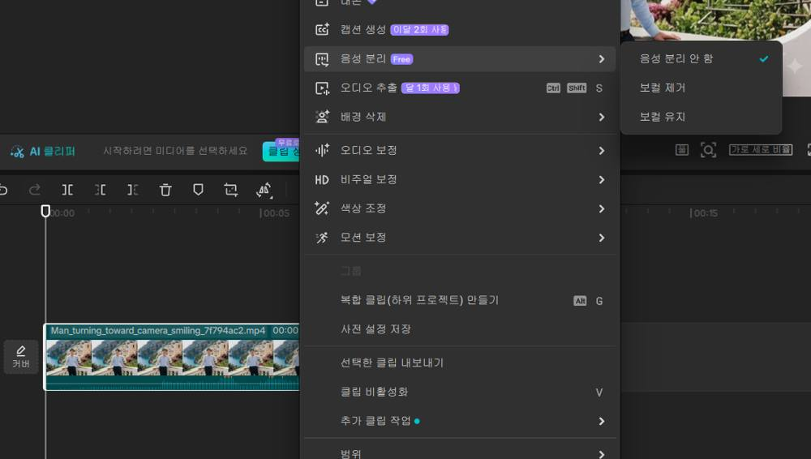
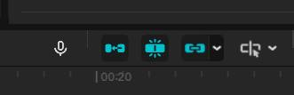
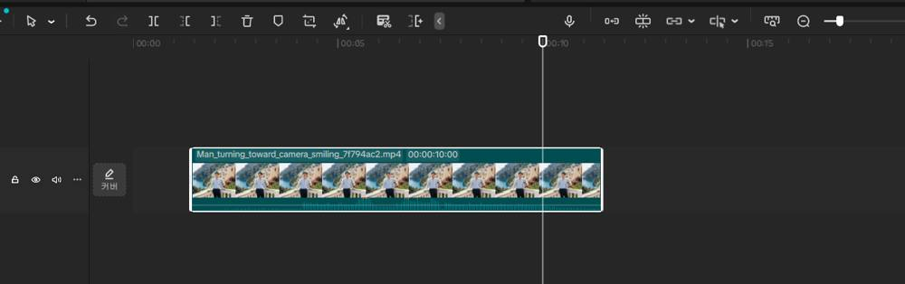
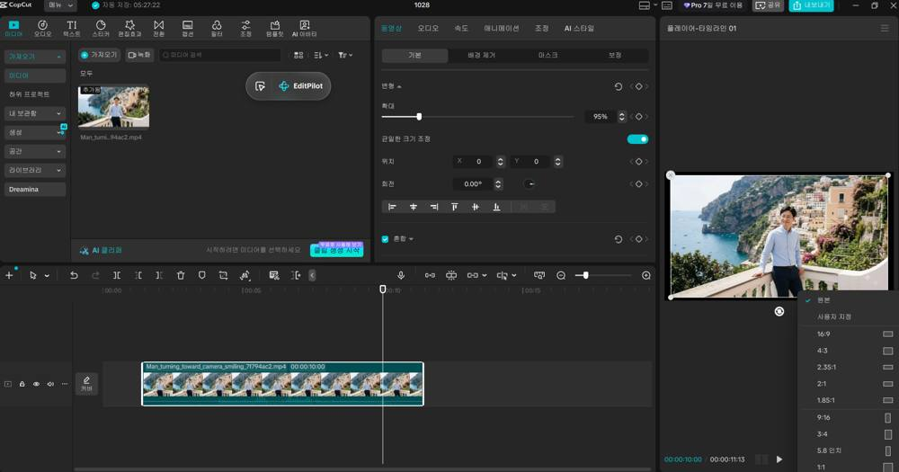
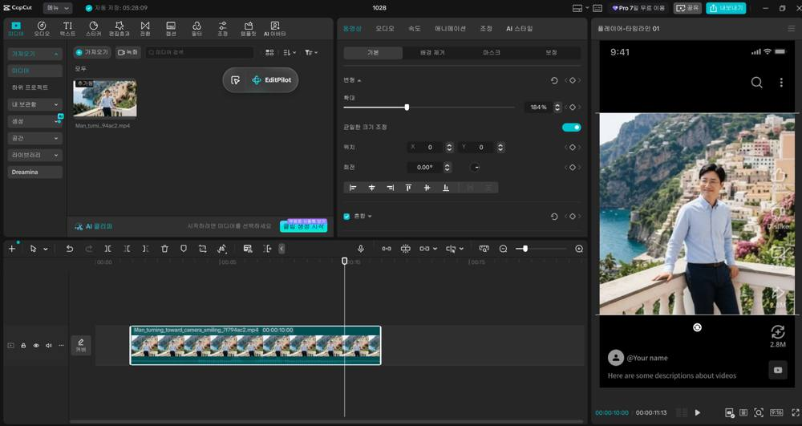
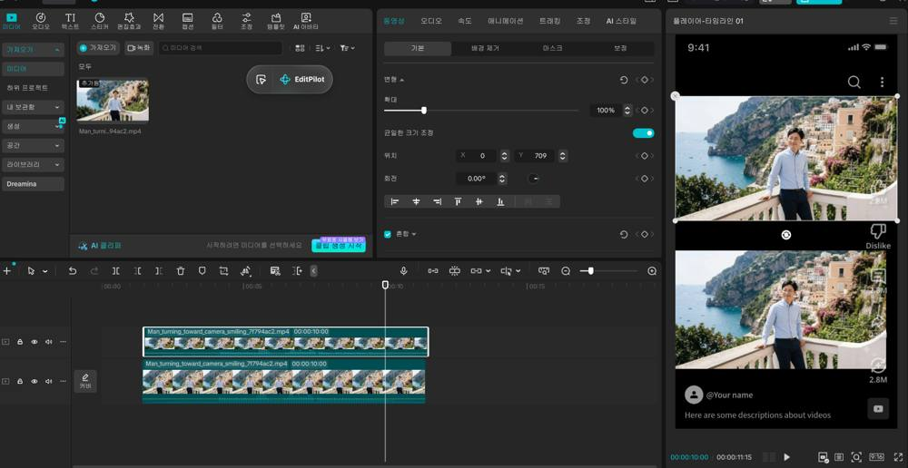

오늘 만들 것
지난 시간에 만든 말하는 영상 2개를 캡컷에서 다듬어 가로 완성본, 세로 쇼츠, 두 화면 영상 세 편으로 만듭니다.
처음에이 교안 보는 법
수업 내내 이 화면을 보며 따라 합니다. 위쪽 바와 아래쪽 단추가 무엇인지 먼저 알아 두면 길을 잃지 않습니다.
- 1내 장소: 지난 시간에 만든 장소를 고르면 타이틀 문구와 스티커 검색어가 고른 장소로 바뀝니다. 「다른 장소」를 고르면 옆에 칸이 생기니 장소 이름을 적습니다.
- 2글자 크기: 「가+」는 크게, 「가−」는 작게, 「가」는 처음 크기로 돌아갑니다. 옆의 「보는 법」을 누르면 언제든 이 설명으로 돌아옵니다.
- 3STEP 단추: 누르면 그 단계로 바로 갑니다. 단추가 옆으로 길면 손가락이나 마우스로 옆으로 밀어 봅니다.
- 4이전·다음: 화면 맨 아래에 늘 붙어 있습니다. 차례대로 넘길 때 씁니다.
- 5오른쪽 「이 STEP의 카드」: 넓은 화면에서는 오른쪽에 지금 단계의 카드 목록이 따라다닙니다. 누르면 그 카드로 내려갑니다. 노트북 화면이 좁으면 보이지 않으니 아래로 내려 보면 됩니다.
- 6「복사」 단추: 프롬프트나 문장 옆의 「복사」를 누르면 「복사됨」으로 바뀝니다. 그다음 쓸 곳에 Ctrl+V로 붙여 넣습니다. 「직접 선택해 복사」가 뜨면 글자를 마우스로 끌어 선택한 뒤 Ctrl+C를 누릅니다.
- 7움직이는 그림: 아래 「❚❚ 멈춤」으로 세우고, 「⟲ 처음부터」로 다시 봅니다. 그림 아래 글이 지금 장면을 설명합니다.
- 8표시와 색 상자
같이 보기 먼저 보며 이해하기 · 따라 하기 화면을 보며 같이 하기 · 내 차례 내 것으로 해 보기
설정·알아 둘 것 주의 막힐 때 한 걸음 더(여유가 있을 때) - 9캡컷 화면 그림: 그림을 누르면 카드가 넓어지며 크게 보입니다. 한 번 더 누르면 원래대로 돌아갑니다.
한눈에 보기여섯 단계로 완성합니다
기본준비물
- 지난 시간에 만든 말하는 영상 2개 (720p로 내려받은 것)
- 캡컷 실행 · 로그인
미리 보기오늘의 규칙 세 줄
- 음악은 캡컷에서 한 곡으로 깝니다. 영상 속 AI 음악은 뺍니다.
- 전환(장면이 바뀔 때 넘어가는 효과)은 두 가지만, 반짝임 같은 효과는 한 번만, 글꼴은 하나로(제목만 예외).
- 오른쪽 위에 보석·Pro 표시가 있는 것은 유료라 쓰지 않습니다. 하나라도 쓰면 내보낼 때 결제 창이 뜹니다.
결과 듣기 · AI 배경음악 빼기
먼저 두 영상을 이어서 들어 보고, 거슬리는 AI 음악을 캡컷에서 뺍니다. 플로우에서 다시 만들 필요가 없습니다. 교안 속 캡컷 화면 그림은 누르면 크게 보입니다.
따라 하기이어서 들어 보기 · 관찰표
새 프로젝트 → 로 두 영상을 불러와 메인 줄(트랙)에 순서대로 놓고 처음부터 재생합니다. 그렇다면 체크하세요.
| 확인할 것 | 영상 1 | 영상 2 |
|---|---|---|
| 대사가 내가 쓴 그대로 나오나요? | ||
| 입 모양이 말과 맞나요? | ||
| 두 영상의 목소리가 같은 사람 같나요? | ||
| 영상이 바뀌는 곳에서 음악이 자연스럽게 이어지나요? | ||
마지막 줄에 체크하지 못했다면 정상입니다. AI는 영상마다 음악을 새로 만들어서, 두 영상을 붙이면 음악이 이음새에서 튑니다. 그래서 AI 음악은 빼고, 캡컷에서 한 곡으로 깝니다.
내 차례보컬 유지로 음악만 빼기
- 영상 1을 오른쪽 클릭 → →
- 잠시 기다린 뒤 재생 → 목소리만 남았는지 듣기
- 영상 2도 똑같이 합니다

오른쪽 클릭 메뉴 → 음성 분리 → 보컬 유지
| 메뉴 | 남는 것 | 언제 |
|---|---|---|
| 보컬 유지 | 사람 목소리만 | AI 음악을 빼고 내 음악을 깔 때 (오늘) |
| 보컬 제거 | 음악·주변 소리만 | 목소리를 빼고 다른 목소리를 입힐 때 |
| 음성 분리 안 함 | 원래 그대로 | 되돌릴 때 |
「보컬」은 원래 노래하는 목소리를 뜻하지만, 여기서는 사람 목소리 전체를 말합니다.
막힐 때이럴 땐 이렇게
| 보이는 문제 | 할 일 |
|---|---|
| 음성 분리가 회색이라 안 눌려요 | 영상을 먼저 한 번 클릭해 선택한 뒤 오른쪽 클릭합니다 |
| 목소리가 조금 뭉개져요 | 정상입니다. 음악과 겹친 부분이 같이 빠진 것이라, 뒤에 음악을 깔면 묻혀서 거의 티가 나지 않습니다 |
| 주변 소리(파도·새소리)도 사라졌어요 | 보컬 유지는 목소리만 남깁니다. STEP 4에서 음악으로 채웁니다 |
타임라인 3총사와 첫 화면 타이틀
영상을 뒤로 밀어 앞에 빈 자리를 만들고, 그 자리에 제목 화면(타이틀)을 넣습니다.
같이 보기타임라인 오른쪽 위의 3총사

버튼에 마우스를 올리면 이름이 나옵니다. 색이 들어와 있으면 켜진 상태입니다.
따라 하기영상 뒤로 밀기
- ① 메인 트랙 자석을 눌러 끕니다.
- 메인 줄의 영상 1과 영상 2를 끌어서 함께 선택합니다 (Ctrl을 누른 채 둘 다 클릭해도 됩니다).
- 오른쪽으로 끌어 약 3초 뒤로 밉니다. 앞에 빈 곳이 생깁니다.

사진은 영상 1개로 해 본 예시입니다. 앞쪽이 비어 있으면 그 부분은 검은 화면으로 나오고, 이 검은 화면이 타이틀 바탕이 됩니다.
내 차례빈 곳에 타이틀 넣기
- → (미리 꾸며진 글자 디자인)에서 마음에 드는 제목을 하나 골라, 메인 줄 바로 위 빈 줄의 0초 자리에 끌어 놓습니다. 글자는 메인 줄에는 들어가지 않습니다.
- 글자를 아래 제목으로 바꿉니다.
- 제목 길이를 빈 곳 길이(3초)에 맞춥니다.
- 제목이 움직이지 않으면 → 에서 나타나는 효과 하나를 고릅니다.
- 자석은 오늘 끝까지 끈 채로 둡니다. 다시 켜면 빈 곳이 닫히면서 영상이 0초로 당겨져 타이틀과 겹칩니다.
- 영상을 밀었는데 다시 0초로 붙어요: 자석 버튼 색이 꺼졌는지 확인하고 다시 밉니다.
- 글자가 메인 줄에 안 들어가요: 정상입니다. 메인 줄 위 빈 줄에 놓습니다.
쪼개고 꾸미기
10초 영상을 그대로 두면 길게 느껴집니다. 2~3컷으로 쪼개 그 사이에 변화를 주고, 자막과 스티커를 얹습니다.
따라 하기10초 영상을 2~3컷으로 쪼개기
- 영상 1을 재생하며 대사가 시작하기 전, 말과 말 사이(숨 쉬는 곳), 대사가 끝난 뒤 중 1~2곳을 고릅니다.
- 그 자리에 플레이헤드(재생 위치를 나타내는 세로 막대)를 두고 버튼 또는 Ctrl+B를 누릅니다.
- 영상 2도 같은 방법으로 쪼갭니다.
- 필요 없는 앞뒤 부분이 있으면 선택하고 Delete로 지웁니다. 자석이 꺼져 있으니, 생긴 빈틈은 뒤 영상을 왼쪽으로 끌어 붙입니다.
한 컷만 가까이: 쪼갠 컷 하나를 클릭 → → → 를 120%로 올리면 가까이 다가가 찍은 것처럼 보입니다.
내 차례전환 · 자막 · 스티커 · 효과 · 필터
| 무엇을 | 어떻게 |
|---|---|
| 전환 | 에서 섞이듯 넘어가는 것(검색어 「혼합」 또는 「디졸브」)과 밀어내며 넘어가는 것(「슬라이드」) 두 가지만 골라 컷과 컷이 맞닿은 경계선 위에 번갈아 끌어 놓기 |
| 대사 자막 | → → 대사를 그대로 적고 말하는 동안만 보이게 길이 맞추기 |
| 스티커 | 검색창에 아래 검색어 → 장면마다 하나씩 |
| 편집효과 (반짝임 같은 화면 효과) | 에서 반짝임·빛 번짐 계열 하나를 마지막 컷에만 |
| 필터 (화면 색감 입히기) | 하나를 골라 영상 전체 길이만큼 늘리기 → 색감이 통일됩니다 |
| 끝맺음 | 마지막 컷 → → |
- 분할 버튼이 회색이에요: 영상을 먼저 한 번 클릭해 선택합니다.
- 전환이 안 들어가요: 컷과 컷이 맞닿은 경계선 위에 정확히 놓습니다. 컷 사이에 틈이 있으면 먼저 붙입니다.
스티커 검색어 (누르면 복사)
한 걸음 더조합 애니메이션 · AI 스타일 · 자막 강조
- 애니메이션 「조합」: 인(시작)·아웃(끝)과 달리, 컷이 재생되는 동안 계속 움직이는 효과입니다. 확대 컷이나 마지막 컷 하나에만 넣어 봅니다.
- AI 스타일: 영상을 클릭 → 오른쪽 위 . 영상의 그림체를 바꿉니다. 보석 표시가 있으면 유료라 건너뜁니다.
- 자막 강조: 대사 자막에서 중요한 단어 하나만 골라 색을 바꿉니다.
음악 깔기 · 가로 완성본 내보내기
STEP 1에서 AI 음악을 뺐으니, 이제 영상 전체에 어울리는 음악 한 곡을 깝니다.
따라 하기음악 한 곡 · 픽사베이 또는 유튜브 오디오 보관함
- 아래 두 곳 중 한 곳에서 가사 없는 곡을 골라 내려받기
- 픽사베이: pixabay.com/music → 아래 검색어로 검색 → ▶ 들어 보기 → 다운로드
- 유튜브 오디오 보관함: studio.youtube.com → 왼쪽 메뉴 → 장르·분위기로 거르기 → ▶ 들어 보기 → 다운로드. 처음 들어가면 채널을 만들라고 물어볼 수 있습니다. 「저작자 표시」가 붙은 곡은 설명란에 출처를 적어야 하니, 표시 없는 곡을 고릅니다. 유튜브 채널이 없으면 픽사베이를 고르는 편이 빠릅니다.
- 캡컷 → 맨 아래 줄에 0초부터 놓기
- 영상이 끝나는 곳에서 음악을 분할(Ctrl+B)하고 뒤를 지우기
- 음악 클릭 → → 을 -15dB 정도(dB는 소리 크기 단위)로 내리기. 대사가 또렷하게 들릴 때까지
- (소리가 점점 작아지며 끝남) 2초 정도
내 차례가로 완성본 내보내기
- 처음부터 끝까지 한 번 재생해 봅니다.
- 오른쪽 위 → 파일 이름 「가로 완성본」 → 저장 위치를 바탕화면으로 바꿔 두기 → 내보내기
소개다른 무료 음악 사이트와 저작권 한눈에
오늘 실습은 픽사베이와 유튜브 오디오 보관함으로 합니다. 아래 사이트도 같은 방식으로 쓸 수 있으니, 곡이 마음에 들지 않을 때 둘러보세요.
| 사이트 | 출처 표기 | 특징 |
|---|---|---|
| 픽사베이 뮤직 | 필요 없음 | 곡이 아주 많습니다. 로그인해서 받으면 다운로드 기록과 라이선스(사용 허락 조건) 확인서가 남아 증거로 쓰기 좋습니다. 누구나 곡을 올리는 곳이라, 드물게 유튜브에서 저작권 표시(클레임)가 걸리는 곡이 있습니다. |
| 유튜브 오디오 보관함 | 대부분 필요 없음 (「저작자 표시」 곡만 필요) | 유튜브가 직접 주는 음악이라 유튜브에 올려 수익을 내도 안전한 편입니다. 유튜브 스튜디오 왼쪽 메뉴에 있습니다. |
| Mixkit | 필요 없음 | 디자인 소재 회사 Envato가 운영합니다. 가입·횟수 제한 없이 받습니다. 곡 수는 적은 편이지만 깔끔한 배경음악이 많습니다. |
| Uppbeat | 무료 회원은 필요 (사이트가 주는 문구를 설명란에) | 유튜버를 위해 만든 사이트로, 클레임이 걸려도 사이트에서 풀어 주는 서비스가 있습니다. 회원가입이 필요하고, 무료는 한 달에 받을 수 있는 곡이 몇 곡뿐입니다. |
| 공유마당 | 곡마다 다름 | 한국저작권위원회가 운영합니다. 국악·전통음악·효과음 같은 한국 소리가 많아 경주·제주 영상에 잘 어울립니다. 곡마다 「출처 표시」, 「상업적 이용 금지」 같은 조건이 다르니 받기 전에 확인합니다. |
| Free Music Archive | 곡마다 다름 | 세계 여러 음악가가 공유한 큰 무료 음악 저장소입니다. 곡마다 라이선스가 다릅니다. 「CC0」(조건 없이 사용) 곡은 표기 없이, 「CC BY」(출처만 적으면 사용) 곡은 출처를 적고 씁니다. 「NC」(상업적 이용 금지) 곡은 수익을 내는 영상에 쓰지 않고, 「ND」(변경 금지) 곡은 자르거나 줄이지 않습니다. |
| Bensound | 무료로 쓰면 필요 | 프랑스 작곡가가 시작한 사이트로, 지금은 여러 작곡가 곡이 있습니다. 무료로 쓰면 출처 표기가 필수이고 쓸 수 있는 범위가 정해져 있으니, 다운로드 화면의 조건을 확인합니다. |
| Incompetech | 필요 (CC BY) | 작곡가 케빈 맥클라우드의 곡 모음으로, 유튜브에서 많이 들어 본 익숙한 배경음악이 많습니다. 설명란에 곡 제목·작곡가·라이선스를 적습니다. |
세로(9:16) 쇼츠로 바꾸기
같은 영상을 휴대폰 세로 화면용으로 바꿉니다. 유튜브 쇼츠·인스타 릴스에 올리는 크기입니다.
한눈에 보기가로 → 세로 → 화면 채우기
따라 하기비율 바꾸고 화면 채우기
- 먼저 복제: 편집 창을 닫고 캡컷 첫 화면으로 나간 뒤, 이 프로젝트를 오른쪽 클릭 → → 이름을 「세로」로 바꿉니다. 가로 완성본은 그대로 두고 「세로」를 열어 작업합니다.
- 미리보기 화면 아래 → (가로 9 : 세로 16, 휴대폰 세로 화면)
- 영상 위아래가 크게 비면, 영상을 클릭 → → → 를 약 180%로 올립니다. 주인공이 크게 보이고, 위아래에 남은 얇은 띠는 쇼츠의 글자·버튼 자리가 됩니다. 띠 없이 꽉 채우려면 약 320%까지 올리는데, 양옆이 많이 잘리고 화질이 조금 흐려집니다.
- 의 X 값을 바꾸거나 미리보기에서 끌어 주인공을 가운데로 옮깁니다.
- 쪼갠 컷마다 확대가 따로라서, 컷마다 3~4번을 반복합니다. STEP 3에서 가까이 키운 컷은 다른 컷보다 조금 더 크게(약 1.2배) 올립니다.
- 타이틀과 대사 자막을 하나씩 눌러 보고, 양옆이 잘리면 글자 크기를 줄이거나 Enter로 두 줄로 나눕니다.

미리보기 아래 「가로 세로 비율」 → 9:16
내 차례쇼츠 화면으로 미리 보기
- 미리보기 오른쪽 아래 아이콘 줄에서 를 엽니다 (아이콘에 마우스를 올리면 이름이 나옵니다)
- 또는 를 고릅니다. 실제 앱처럼 버튼과 글자가 덮여 보입니다.
- 자막·스티커·타이틀이 오른쪽 버튼이나 아래 설명 글에 가리지 않게 안쪽으로 옮깁니다.
- 확인이 끝나면 으로 돌려놓고, → 파일 이름 「세로 쇼츠」
- 복제가 안 보여요: 편집 창이 아니라 캡컷 첫 화면(프로젝트 목록)에서 오른쪽 클릭합니다.
- 세로로 바꿨더니 글자가 잘려요: 글자 상자를 눌러 크기를 줄이거나 줄을 바꿉니다.

미리 보기를 켜면 좋아요·댓글 버튼이 영상 위에 겹쳐 보입니다. 이 화면은 내보낼 때 들어가지 않습니다.
한 화면에 영상 두 개
세로 화면 위·아래에 영상 두 개를 동시에 보여 줍니다. 전후 비교, 두 장면 동시에 보여 주기에 많이 씁니다.
따라 하기위아래 두 화면 만들기
- 캡컷 첫 화면에서 새 프로젝트를 만들고 을 9:16으로 바꿉니다. (쪼개고 꾸민 프로젝트를 복제하면 컷이 너무 많아 옮기기 어렵습니다.)
- 원본 영상 2개를 가져와 영상 1은 메인 줄, 영상 2는 그 바로 위 줄의 0초에 겹쳐 놓습니다. 새로 불러온 원본에는 AI 음악이 다시 들어 있으니 STEP 1처럼 를 다시 합니다.
- 두 영상 모두 를 100%로 되돌립니다.
- 위 줄 영상: Y를 약 700 → 화면 위쪽으로
- 메인 줄 영상: Y를 약 -700 → 화면 아래쪽으로
- 두 영상의 소리가 겹치면 그 줄 맨 왼쪽의 스피커 아이콘을 눌러 한쪽 소리를 끄거나, 위 줄 영상을 뒤로 밀어 대사가 차례로 나오게 합니다.
- 오른쪽 위 → 파일 이름 「두 화면」 → 내보내기
- 숫자 넣는 법: 위치 Y 칸을 클릭 → 숫자를 지우고 입력 → Enter
- 위 줄 영상이 안 움직여요: 타임라인에서 위 줄 영상을 먼저 클릭했는지 확인합니다.
숫자가 딱 맞지 않아도 됩니다. 미리보기에서 영상을 직접 끌어 위아래로 맞춰도 됩니다.
같이 보기이렇게 됩니다

타임라인에 영상이 두 줄로 겹쳐 있고, 미리보기에는 위·아래 두 화면이 보입니다. 영상을 두 줄로 겹치면 오른쪽 위에 「트래킹」(움직이는 대상을 따라가는 기능, 오늘은 쓰지 않음) 메뉴가 새로 생깁니다.
- 두 화면 사이 가운데에 텍스트로 제목 띠를 넣습니다 (예: 「계단에서 · 테라스에서」).
- 가로(16:9) 프로젝트에서는 X 값을 바꿔 왼쪽·오른쪽 반반 화면을 만들어 봅니다.
마무리세 편을 나란히 보기
「가로 완성본」, 「세로 쇼츠」, 두 화면 영상을 차례로 틀어 봅니다.
- 같은 영상인데 가로와 세로 중 어느 쪽이 더 눈에 들어오나요?
- AI 음악을 뺀 뒤 깐 음악이 영상 전체를 하나로 묶어 주나요?
- 자막이나 스티커가 버튼에 가린 곳은 없나요?